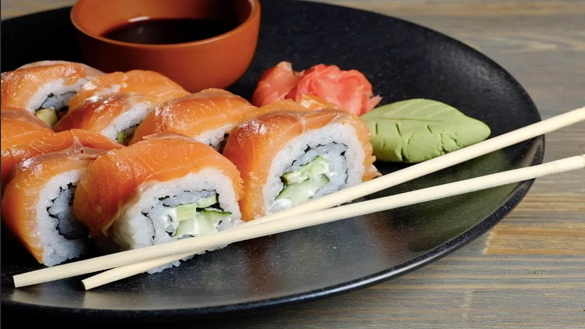
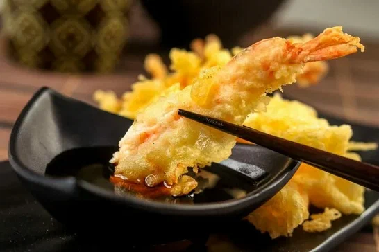

Вкусный блог!
Японская кухня
Японская кухня известна своими свежими ингредиентами и простыми, но вкусными блюдами.
Мы предоставляем вам три наших любимых рецепта!
| Изображение: | Название блюда: | Рецепт: |
|  | Суши филадельфия | Ингредиенты:
вода — 240 г для риса;
форель — 100 г;
рыбный крем — 2 ст. л.;
крабовые палочки — 2 шт.;
креветки — 10 шт.;
вода — 80 мл для заливки;
уксус рисовый — 25 г;
соль — 1 ч. л.;
нори — 10 шт. полосок;
имбирь — по вкусу;
соевый соус — по вкусу;
васаби — по вкусу;
соус терияки — по желанию.
Приготовление: Подготовить все ингредиенты для суши. В качестве рыбной составляющей взять слабосолёную форель. Также понадобятся крабовые палочки, отварные креветки и рыбный крем. Листы нори нужно предварительно нарезать на прямоугольные полоски 3,5х13 см. Приготовить рис для суши. Рис хорошо промыть и выложить в кастрюлю, залить холодной водой и поставить на огонь. Варить рис после закипания воды на медленном огне в течение 10 минут. Далее выключить огонь. Между крышкой и кастрюлей выложить полотенце и оставить рис в таком виде на 15–20 минут. В это время заняться начинкой. Подготовить рыбу для суши. Нарезать рыбу на небольшие прямоугольники, примерно, по 4х1,5 см каждый. Количество прямоугольников из форели должно быть равно количеству суши, которые вы планируете приготовить. Обрезки, оставшиеся от рыбы, мелко нарезать. Убрать прямоугольники рыбы в сторону, а нарезанную рыбу смешать с одной столовой ложкой рыбного крема. Вместо рыбного крема можно использовать другой соус, например, майонез соединить с творожным сыром в равных пропорциях. Уложить рис на нори, сверху выложить начинку из рыбы и свернуть суши. Приятного аппетита! |
 |
Рамен с курицей | Ингредиенты:
100 г лапши рамен;
1 куриное филе;
0,5 моркови;
2 стебля сельдерея;
0,5 болгарского перца;
2 пера зелёного лука;
2 зубчика чеснока;
800 мл бульона;
2 ст. л. соевого соуса.
Приготовление: Мелко нарезать все овощи. Добавить соевый соус, специи и бульон, проварить 1–2 минуты после кипения. Добавить мелко нарезанную курицу и лапшу, варить ещё 10 минут на среднем огне. В конце добавить зелёный лук. Приятного аппетита! |
|  | Темпура из креветок | Ингредиенты:
мука рисовая — 1 ст. л.;
мука кукурузная — 2 ст. л.;
мука пшеничная — 1 ст. л.;
креветки очищенные — 400–450 г;
яйцо — 1 шт.;
ледяная вода — 1 стакан;
лимон — ½ шт.;
перец чили сухой — 1 щепотка;
масло кунжутное или любое растительное для жарки.
Приготовление: Креветки очистить от панциря, оставив хвостик, сделать несколько глубоких надрезов вдоль хребта и чуть-чуть придавить широкой стороной ножа. Так мякоть станет мягче и сочнее. В глубокой миске с помощью венчика смешать сырое яйцо и стакан ледяной воды. Всыпать три вида муки, добавить щепотку острого красного перца, быстро перемешать венчиком. Каждую креветку слегка присыпать рисовой или пшеничной мукой, один раз обмакнуть в кляр и жарить в кипящем масле 3–4 минуты до золотистой корочки. Креветки выложить на бумажное полотенце, сбрызнуть соком лимона и подавать на стол вместе с соевым соусом. Приятного аппетита! |